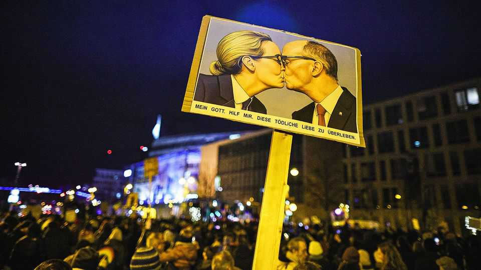
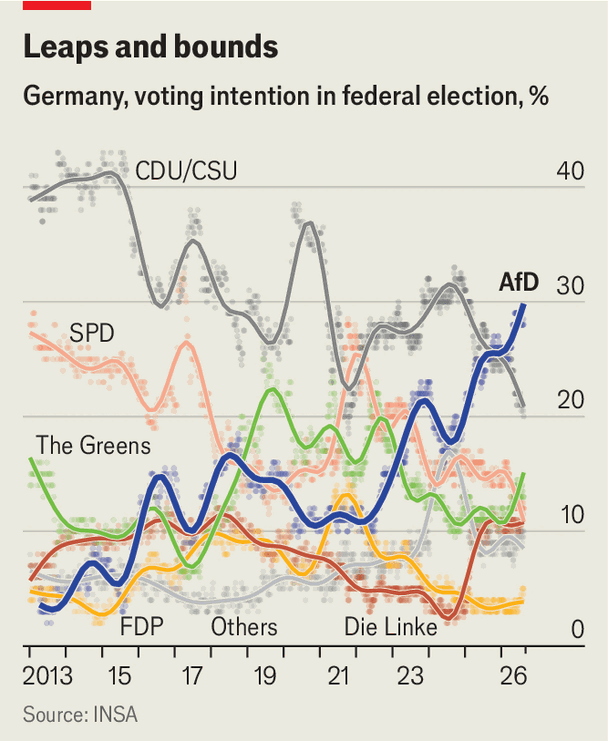
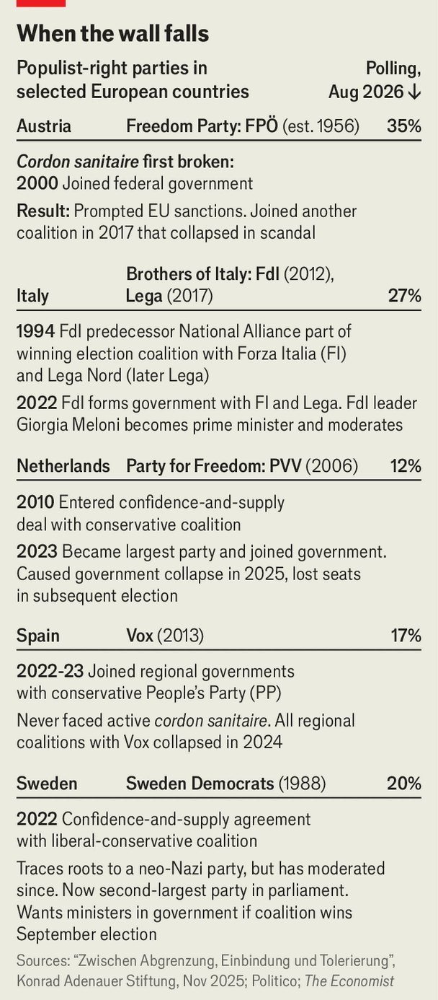

How the anti-AfD firewall broke German politics
A policy designed to keep the far right from office has ended up strengthening it

Aug 20th 2026
IT IS AS unusual in Germany as anywhere to see conservatives cavort with Marxists. But at a demonstration in Bitterfeld, a town in the eastern state of Saxony-Anhalt, flags bearing the names of almost all Germany’s political parties flutter in the breeze, from the centre-right Christian Democrats (CDU) to the Greens and Social Democrats (SPD) all the way to the hard-left Die Linke. The Bunt statt braun (colourful instead of brown) demos began last year to counter rallies organised by the far-right Alternative for Germany (AfD). For many in Bitterfeld’s town square, the prospect of the AfD in power is a horrifying reminder of German history’s darkest period.
But as the flags suggest, a broad popular front may be needed to stop it. On September 6th Saxony-Anhalt will hold one of the most important state elections in postwar German history. The AfD, currently polling above 40%, could secure an absolute majority and take office for the first time in a German state. The threat is concentrating minds. The biggest cheer of the evening goes to a CDU member who tells the left-leaning crowd that “democracy is more important than political differences.”
Germany’s proportional-voting system means absolute majorities are unusual. Of the country’s 16 states, only tiny Saarland has a single-party government. Parties assemble in a variety of coalitions, often given colourful names. But the AfD has been blocked from power everywhere by a Brandmauer, or firewall, that other parties have erected around it. The most important firewall is that maintained by the CDU, Germany’s ruling party and traditionally its largest. It formalised the policy in 2018 with an “incompatibility resolution” banning co-operation with both the AfD and Die Linke.
But as the AfD has grown, the Brandmauer has become something like an organising principle of public life. Legislative measures that could win majorities are ruled out, because AfD votes cannot be allowed to tip the scale. Parliamentary rules are changed to stop the party from thwarting the election of judges. AfD MPs are excluded from Bundestag vice-presidencies, and even from its football team. “They don’t greet you, they don’t shake your hand, you are a non-person,” says Gerold Otten, an AfD MP, of his colleagues in leftist parties. The Brandmauer even extends beyond politics. Business groups have retracted invitations to AfD MPs after furious backlashes.
Has the policy worked? For some, keeping the AfD out of power is justification enough. The AfD is among the more extreme of Europe’s populist outfits, many of which shun its company. It flirts with racism and Nazi imagery, has sympathy for Vladimir Putin and harbours former neo-Nazis in its ranks. Its boorish behaviour demeans parliaments. “We don’t exclude the AfD because of the 2018 resolution, but because we don’t share any values with it,” says Wiebke Winter, head of the CDU in the city-state of Bremen.

Yet the Brandmauer has failed to arrest the AfD’s rise. In 2018 Friedrich Merz, now the CDU leader and Germany’s chancellor, vowed to halve the AfD’s vote. He hoped tacking right on immigration and governing well could win back voters seduced by the AfD’s narrative. None of this has worked. Irregular immigration has plummeted, but the AfD has simply moved further right, now raging against “culturally foreign” workers and urging “remigration” (a slippery term that can mean anything from deporting asylum-seekers to ethnic cleansing). The CDU is nudging record lows in polls, while the AfD has enjoyed a lead for months (see chart). Its support has doubled since Mr Merz’s pledge.
And in Saxony-Anhalt and other AfD strongholds, the Brandmauer is already struggling to hold. Armin Schenk, Bitterfeld’s CDU mayor, found lurking on the edge of the protest, says the “right-wing extremist” AfD should be kept from power in the country that perpetrated the Holocaust. But in Bitterfeld, he adds, “the Brandmauer is not a reality,” because “in most cases decisions cannot be taken without the AfD.” With 15 of the city’s 40 council seats, it is the largest party.
Even when the Brandmauer holds, it forces other parties to contort themselves around it. Thuringia and Saxony, two other eastern states, assembled incoherent or unstable CDU-led minority governments after a strong AfD performance in elections in 2024. They are held together by strong leaders. But they serve the AfD’s narrative that the mainstream outfits are indistinguishable Kartellparteien (“cartel parties”).
Saxony-Anhalt threatens to push the strategy to its limits. If the AfD wins on September 6th, the Brandmauer is irrelevant. If it falls just short, the CDU will probably need support from every other party, including Die Linke, to take office. Confronted with that prospect, some CDU members might defect: one AfD candidate in Saxony-Anhalt reckons five are ready to jump. If not, the strains of buying off the hard left would test Mr Merz’s authority so sorely that some think it could end his career. And if, as polls suggest, the AfD wins twice as many seats as the CDU yet remains locked out of power, it will not only be AfD supporters who ask whether German democracy is working.
It is dawning on the CDU that it has painted itself into a corner. “Anyone still talking about firewalls has not recognised the signs of the times,” said Michael Kretschmer, the CDU premier of Saxony, recently. The Brandmauer in effect obliges the party to seek coalitions only to its left, especially with the SPD, which has been in power in Germany almost without interruption since 1998—despite these days barely polling in double figures. CDU members’ frustration with concessions to the SPD inspires occasional calls for a minority government that could, on certain issues (such as migration, tax and energy), seek a “conservative majority” with the AfD. Voters are shifting, too. Support for the anti-AfD Brandmauer has dwindled from a clear majority to 41%.
Yet the CDU has no easy way out. Tearing down the Brandmauer would split the party down the middle and trigger a voter exodus. Even minor violations have caused trouble. In 2020 the CDU voted with the AfD to elect a (short-lived) premier in Thuringia; the ensuing furore toppled Annegret Kramp-Karrenbauer, the party’s national leader. In January 2025 Mr Merz ordered his party to vote with the AfD on symbolic anti-migration measures in the Bundestag. This sparked protests across Germany and boosted support for Die Linke at the subsequent election. The chancellor is said to be traumatised by the experience.
To avoid these dilemmas, some in the CDU quietly hope for an AfD majority in Saxony-Anhalt. But this does not amount to a strategy. “There has never been a reasonable debate about how to handle the AfD in the CDU, just a reflex to exclude them as the new Nazis,” says Andreas Rödder, a professor who in 2023 resigned as head of the CDU’s fundamental-values commission over his calls for openness to minority governments rather than a rigid Brandmauer.
As for the AfD, it once railed against the Brandmauer as a gross violation of democracy. But these days many in the AfD look forward to governing alone. “We don’t think about how to make ourselves nice so that the CDU asks us for a coalition,” says Malte Kaufmann, an AfD MP. The party’s deputy chairman in Saxony-Anhalt has said their voters want them to “finish off” the CDU rather than co-operate with it.

In some countries populists have moderated to gain power (see table). But behind the Brandmauer, the AfD has had no incentive to do so. Torben Braga, another MP, says those in the party who would like to tack to the centre have lost the argument for two reasons. First, “our election results are getting better and better without us being forced to change.” Second, the party fears that moderating its positions and ejecting hardliners would alienate some voters. “The Brandmauer protects us from having to deal with very difficult questions,” Mr Braga says.
That seems right. Although it has professionalised its organisation and communication, the AfD is riven by scandal, power struggles and discord, especially on foreign policy. It has no coherent governing programme. Off the record, party figures are extraordinarily rude about one another. But none of this seems to matter. Behind the Brandmauer you can promise anything, says Christian Stecker, a political scientist at the Technical University in Darmstadt. “It protects them from the disappointment that accountability in a democracy implies.”
In despair, some mainstream politicians, including Ms Winter in the CDU, now look favourably on calls to ban the AfD, something explicitly allowed under Germany’s constitution. But even if parliament approved that proposal, which seems unlikely, the constitutional court would take years to rule on it. Others hope that the centre can somehow win back its lost voters: perhaps by ditching the wildly unpopular Mr Merz.
The Brandmauer looks intact for now. One former CDU minister says that 90% of senior figures in the party are opposed to working with the AfD. “It would not only damage us politically but would be against the principles that define our republic,” he says. But a growing number sympathise with Mr Stecker’s gloomier view. “It’s too late for the CDU to turn around, and too late for the AfD to accept any turnaround,” he says. “Some things will tumble down, new things will emerge—and we don’t know what it will all look like.”■